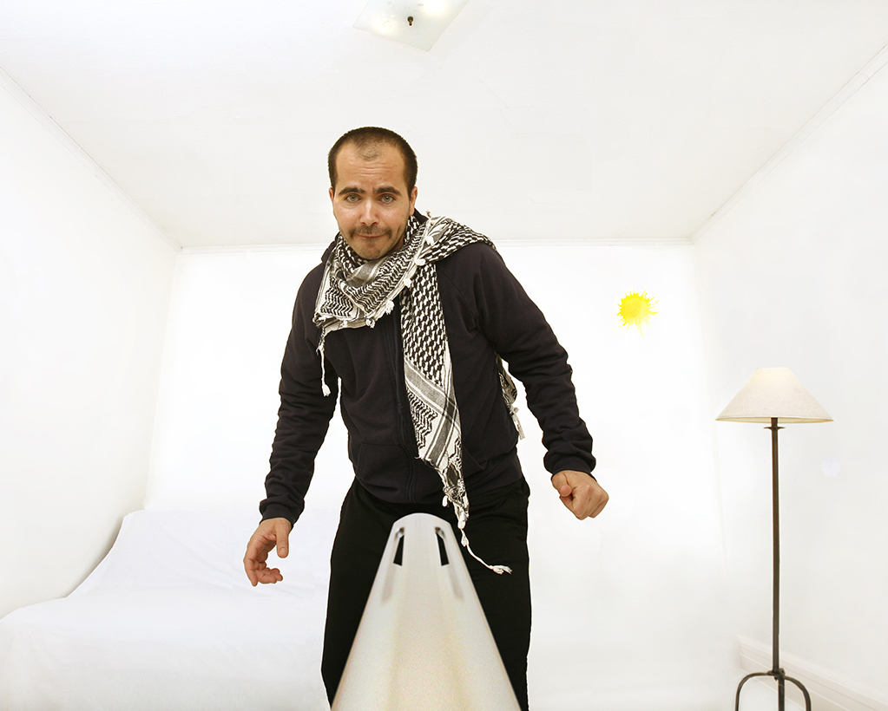

Wafaa Bilal is an Iraqi-born American artist whose practice stems from the extreme tensions between the cultural spaces he occupies—his home in the comfort zone of the US, and his heart in the conflict zone of Iraq. He grew up during a particularly turbulent period of Iraq's history and his experience of war and revolution has informed his art.
Bilal is known internationally for his provocative, performative and interactive works exploring international and interpersonal politics post-conflict.
Here is a link to his work on his website which displays all of his artworks including descriptions and videos.
We picked this artist and this piece of art to be analyzing and building a project on because we believe that the topic of islamophobia should be recognized and we also agree with the idea and message that with anonymity comes cruelty in forms such as racism and islamophobia and thought it'd be interesting to share and perhaps invoke some more thoughts from people who haven't seen or heard about this piece. More on our thoughts!